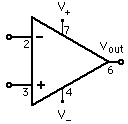

Op-amp Varieties
| Operational amplifiers are very versatile electronic devices. This is a sampling of the kinds of devices which can be created with a single op-amp. |  |


Electronics concepts
Op-amp concepts
| HyperPhysics*****Electricity and magnetism | R Nave |